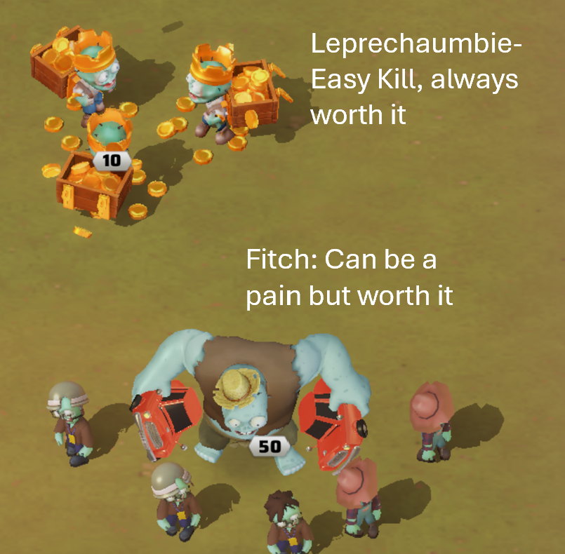
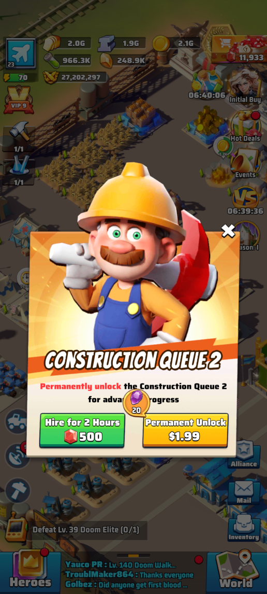
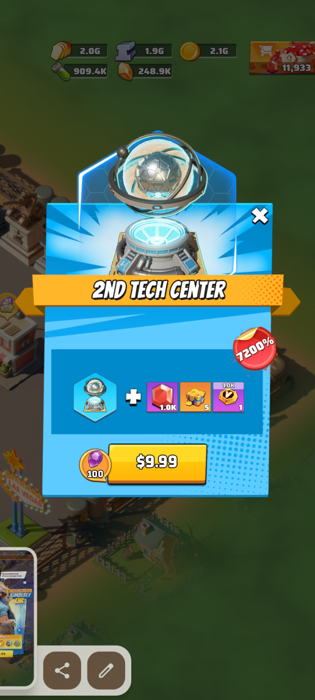
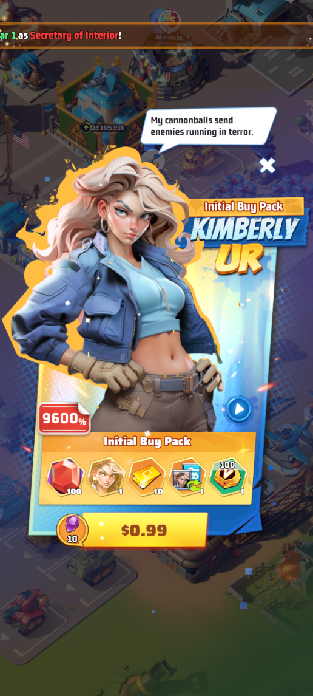

Last War: Survivor Tutorial by Golbez


This site will be free to read and ad-free as long as I can manage. But it takes a lot of time. If you want to throw a couple of bucks my way for a coffee or a hero shards pack I’d appreciate. Who knows, you might be saving a marriage.
Overview
Game Meta
Last War: Survival can be considered a game in two phases.
Initially, the gameplay takes the form of the scrolling zombie battle game that you see advertised on social media all the time. While this type of game play remains a part of the game to some extent, it’s mostly used as a way to get people sucked into playing the game while they get you hooked on the second phase (hoping you’ll stick around and spend money).
The second phase of game play is all about strategic base development. It’s like SIM City, Age of Empires, and other classic empire building game formats. What perhaps make this game a little different (and more fun in my opinion), is the intentional design to make joining an alliance essential. While there are certainly ways to enjoy the game playing on your own (more about that here), the Devs have clearly made the majority of the focus the events and tasks that are oriented around cooperation with your alliance and combat against other alliances and servers.
Alliance Duel: Weekly VS Battle Strategy
Alliance duel is one of the biggest parts of this game. Some would argue it’s the main point of the game. The idea is that 6 out of 7 days each will, alliance members complete in-game tasks that earn points for your alliance. Every day has a different theme. To maximize your performance, you not only have to do the correct tasks on the optimal day, but you have to be patient and plan on the other 6 days to ensure you aren’t wasting “future” points. It’s definitely a balance.
It’s important to know that Last War:Surival is a pay to win game. In other words, you can employ all of the strategy you can and play this game 24/7, and you’ll still not stand a chance again people who spend actual real-world money on the game (you can read more of my thoughts on spending real money here). That being said, you can grind your way to success and can often win by being smart instead of rich.
The first step to playing smart is to upgrade your Aliance Duel tech in the Tech Center.
The Tech Center
Every HQ has at least one Tech Center. You can purchase a second tech center for $9.99, which is not required, but it will drastically improve your ability to grow in the game.I intentionally don’t pressure people to spend money on this game. However, the second Tech Center makes my list of Top 5 Real Money Spends in the game.
The first image shows you what your tech center looks like. The second image shows you the research tech domains you can access (at varying levels).


When you click on the Alliance Duel domain (VS icon), you will see many options that give bonuses to the tasks we need to perform each week to earn VS points. I am highlighting the Radar tech in the top left corner. Mine happens to be fully completed. This means that on days when radar tasks give VS points, mine give 150% percent of the base points (100% base + 50% buff). In other words, each radar task I complete increases my/our VS Duel points by 25,000. So a member with a lower research level is doing the same thing I am but is getting a fraction of the points for it.


Once you’ve completed an upgrade, you will always get the higher points in each week’s Alliance Duel.You will see that there are buffs for nearly everything we do that earns Alliance Duel points. This is the first and most important step you can take to improving your contributions to the Alliance Duel.
Day 3: Age of Science
Alliance Duel Victory Value: 2 Points

Day 3 Explained
Day 3 (Age of Science) Rewards VS points for the following:
- Tech Center Research
- Completing Research
- Using Research Speedups
- Using Valor Badges
- Increasing Tech Power (which comes from completing research)
- Completing Radar Tasks
- Opening Drone Compenent Chests
Prioritizing
Upgrades with Valor Badges
The way to earn the most VS points on Day 3 is by upgrading tech that requires the use of valor badges, which can be viewed in your inventory’s “Special” tab and look like this:

There are multiple ways to acquire valor badges, but that doesn’t make them easy to get. You likely won’t be able to upgrade ever valor-badge tech you want each time it’s the Age of Science. You simply will run out of those before you run out of speedups and gold.
The following tech domains require valor badges for upgrades:
Alliance Duel
Special Forces
Intercity Truck
Siege to Seize
Defense Fortifications
Radar Tasks
This can be a huge and easy source of points. But this is mostly true when you have maxed out the radar boost in the Alliance Duel Tech domain in the research center. I am extremely reluctant to tell people how to spend their money, but I do not advise paying the $4.99 for a radar replinsh. It can purchase 1,000,000 VS points when you are fully upgraded, but this is typically nowhere near enough to flip the outcome of the day. What’s more, you have basically nothing to show for your money. The benefit is almost immediately gone.
Drone Component Chests
The hardest part about getting points opening drone component chests is just waiting 6 days to spend them each week as Day 3 is the only time you get VS points for them. The very high level chests can boost your score very quickly, but those are extremely difficult to obtain. As I said before, the best thing you can do is keep staring at the image below six days and not touching them.

Maximizing with the Secretary of Science Buff
Most of the time (I won’t go into the exceptions here), you can apply at the capital for the Secretary of Science (and other) position. The server’s First Lady appoints people to this position once they have applied. Generally, when it is your turn, you will have the Secretay of Science position for 5 minutes only. During this time, you will get a 50% reduction in research time added to your existing buffs. This means it doesn’t cut the time you see in half. It’s more complicated than that. Nevertheless, it can take DAYS (yes, days!) off of your time for research at the higher levels.
To apply for Secretary of Science Position, you can click the “Capital” crown icon that is sometimes visible on the right hand side of your screen. When that icon is not there, you need to go to your profile, select the server (421), and then select the “Officials” (building) icon.


Make sure that you plan ahead. The wait list is usually very long. Each person in line is a minimum 5 minute wait. Count how many are ahead of you, multiply by 5, and then set an alarm for close to the time when you should be up. Keep in mind that some First Lady’s skip over folks in the quere who are not online. So it’s possible that you will get skipped if you sign off. Getting this buff can be a serious committment on Day 3 of VS, but it’s definitely worth it.
Once the buff is active, choose small research tasks (in terms of time). Start the task and then burn through all of the research speedups I know you’ve been saving. Complete as many research levels as possible, focusing on those that use Valor Badges. Watch your point total skyrocket while you get super strong.
Pro Tip: The Secretary of Science position also gives you a 25% boost to building construction time reduction, so you can double dip. Similarly, the Secretary of Development Position gives you a 25% research boost in addition to the 50% construction boost. So if you don’t feel like waiting in line for Secretary of Science, you can usually get the Development position faster and sacrifice some times.
Rotating Events
Last War features a number of events that rotate throughout the month. I’ll try to get them all here eventually.
Zombie Invasion

I like to refer to Zombie Invasion as “The Most Wonderful Time of the Year.” What’s not to love about Zombie Invasion? Little leprechaumbies that crap out big fat Zombie Bosses when you kill them? Sweet (and I mean sweet) rewards. In fact, that’s where I’ll start.
Zombie Invasion Mechanics
This event is straightforward. The server map populates with delicious little level 10 zombies holding pots of gold (henceforward known as leprechaumbies). The leprechaumbies are easy to kill and they give great rewards.
Occasionally, defeating a leprechaumbie causes them to poop at a zombie boss. These are like doom elites (standard, not Season 1) in that you must rally attack them regardless of levels. The levels increase at multiples of 5, so don’t go looking for a level 3 one. These bosses are unlike regular doom elites in that, at higher levels, they can be really annoying to kill, making them tough little fitches (get it? leprechaumbie and fitch?). And the difference in rewards between something like a level 45 and a level 65 is in no way worth the loss of troops.
Another cool way that these zombie bosses differ from regualar doom elites is that the person who killed the leprechaumbie that pooped out the fitch gets a “finders fee” when someone kills that fitch. So you get rewards even if you don’t kill it. Of course, the catch is that they are on a timer, so you have to kill them in a set amount of time.
And if this all isn’t enough, let me put a cherry on top of this Sunday. If you kill the fitch that your spawned you basically get double rewards.
What I like to do, since the leprechaumbies are so easy to kill, is to go tile surf (see other tab) and farm with my lower squad so that my top squad is free to launch the rally on any fitches I spawn.

Zombie Invasion Store

In theory the most important part of Zombie Invasion is how to participate. But you’d be amazed how many people participate in Zombie Invasion for months and have no idea there is a ZOMBIE INVASION STORE!!! And it’s actually really good. Here’s what you need to know.
Killing Leprechaumbies (level 10 normies) and Fitches (the spawning zombie bosses) gives you trade store tickets. These can be spent in the Zombie Invasion Trade Store as long as the event is currently live. But don’t worry, if you don’t manage to spend all of your tickets, they’ll stay in your inventory until the next time the event is back in rotation.
I don’t have tons of advice about prioritizing purchases except to say that my first choice here is always the stamina. Each Leprezaumbie uses 10 stamina and the zombie bosses require 20. You can run out of stamina real fast farming these lovelies. So stock up here first.
From there, I typically prioritize hero recruitment tickets. Beyond that, it really just depends on your needs at the time.
I typically don’t buy valor points or drone parts here because I don’t think they are better buys than the other stuff in the store and I never have enough tickets to buy everything.
Tile Surfing for Faster Zombie Farming
The game mechanics set different marching speeds for your squads based on the activity they are doing. In general, it takes a LOT longer to get somewhere when you are attacking. It takes about hald the time to travel to an adjacent resource tile, though, because the march speed for gathering is so much faster. In other words, if there is a zombie right next to a gold mine on the map, and you dispatch two squads at the same, assuming they have equal base march speeds, the squad going to the gold mine will get to it’s destination almost twice as fast as the one that you dispatched to the zombie.
So the smart play if you want to attack the zombie is to dispatch your squad to the gold mine, then attack the zombie from the gold mine once you are there or right before you get to your location.
Now, let’s take it to the next level for maximum efficiency. There are so many gold-pot-toting zombies on the map that you can spend lots of time hunting them. The real pro move for this is what I call “tile surfing”. The idea is that you find an area with lots of the little zombies, target a nearby resource tile, transition to the zombie, then rinse and repeat.
Here’s a video I made to demonstrate.
If you’ll forgive the self-promotion here, please like and subscribe while you’re there. There’s not much there right now, but I’ll be posting more content in the future. And you know, blah blah blah algorithms blah blah blah.
Paying to Win
Like it not, this game is pay to win. It’s not pay to play, but if you want to achieve max bonuses, unlock the best gear, grab those amazing cosmetics, and defeat your opponents, the amount you spend matters. In our alliance (#421; lfG), I make a big deal not to pressure people to spend real money. In fact, our leadership team has been instructed not even to suggest people spend money on this game. But I have invested plenty of money in this game, and there are lots of people who have invested thousands of REAL US DOLLARS in this game. It’s a serious business.
Many people think the idea that spending any money at all on a free game is absurd. People are allowed to feel however they want. But let me offer some of my perspective on this. I used to run a lot. I got to where I got sad if I wasn’t running 4-8 miles a day. One thing that’s awesome about running is that you can do it for free. However, you can also spend hundreds of dollars on high-performance shoes. You can add hundreds more in fancy attire and supplements. You can even pay money to run at the same time as other people in a thing called a race, which is wild, because you can basically challenge anyone to a foot race for the price of zero dollars.
I have a buddy who is big into golfing. He tells me that depending on the course, a person could expect to pay a median greens fee in the range of $50 - $100 for 18 holes. Now let’s say my buddy does that this Friday. He drops $100 on 18 holes and 2 rounds of beers and has 4 hours of fun on a Friday afternoon. When that’s over, he’s got nothing to show for it. But who cares? He works hard for his money and had a good time when he spent it.
I see the game the same way. If I play this game for 4 hours on Friday night and have a blast pushing VS, doing Desert Storm, rallying Marshall and lighting up HQs in Enemy Buster, and chatting with all my friends in the alliance who are doing the same, who cares if I spent $50 on game packs? I had a blast, and the $50 helped me win some of those close battles. I have just as much to show for it as my buddy who played a round of golf.
My final take is this: I work for a living. I make money for my work. I have played this game for multiple hours probably every day since I downloaded it. That’s hundreds of hours of enjoyment. Some people spend $100 a month just on tipping the barista who pours their iced coffee each morning. The absurdity of tipping as a system of payment is a conversation for another blog. But I think the Devs of this game do a lot more work to ensure my enjoyment than the myriad folks nowadays who flip the iPad and tell me there’s a question I need to answer. And I think the devs deserve to make money for that work. So I’m not going to feel bad buying game packs to support them. Just like with my server at the restaurant, it’s not their fault they make more money if I spend more and tip better.
In sum, you work hard for your money and if you can afford to spend some on this game, then that’s your business. If you don’t want to spend any money, that’s cool, too. This is a free game. There are many people in this game who have really powerful accounts and have spent $0 or a couple of bucks at most. You just have to grind it out and be smart. That’s what this strategy guide is for. If you want to spend money, though, there are also smart ways to do it. I’m going to give you my top 5 in-game spends here as well as some pay-to-win grabs that I think you might want to avoid.
Top 5 In-Game purchases
- Construction Queue 2 for $1.99

Think of this as purchasing time. You don’t have to wait nearly as long in real life to enjoy new parts of the game if you build multiple buildings at once. To put it another way, this is like paying $2 for a permanent 50% construction buff (you’re doing twice the building now in the same amount of time as a single). There is a way to “rent” the second building queue for diamonds when you need it. That’s a great option for free-to-play people, but I think $2 here is money very well spent. And think of it like this. Since you no longer have to rent the builder with diamonds, you’re essentially purchasing a boat load of future diamonds with that $2. I mean who doesn’t love a good BOGO!?
- Second Tech Center for $9.99

When you get into later game (like HQ27 and up), the emphasis shifts drastically to upgrading your tech. There are SOOOOOO many tech upgrades and they start getting into taking multiple weeks to finish. You really can’t compete at the highest levels if you don’t have a lot of upgrades. And you can technically upgrade everything in the game with one tech center, but man does it take forever. A second tech center can also add some extra oomph to VS and Arms Race events that reward tech power increases.
- Kimberly (UR Tank Hero) for $.99

This list used to have 1a as the second construction queue and 1b as Kim. She’s fallen a little bit recently because the game no longer forces you to upgrade the tank center in order to get to higher HQ levels. Nevertheless, Kim remains pound-for-pound the best hero purchase in the game. There are other UR heroes that are comparable (Stetman in particular), but you typically have to spend $5 on the “Take All” daily sale to unlock him (See number 5 for more info about Daily Must Buys).
- Construction Queue 3 for $9.99

This is nowhere near the steal that the second construction queue is, but it’s still a tremendous value. Hero power is great, but I think the best purchases in the game are the ones that save you time. Even with multiple stacked construction buffs and the appointment to Secretary of Development, high level HQ upgrades can take a month or more. And the tech center, tank (or missile or aircraft) centers, barracks, hospitals and the wall aren’t far behind. Only having one or even two constuction queues will get you bottlenecked for growth in the long run.
- “Take All” Daily Must Buy for $4.99

The Daily Must Buy “Take All” deal is great. Every day you get a chance to get 10 hero-specific UR shards and some other assorted rewards for $4.99. This is how I have unlocked multiple UR heroes. You can unlock some by random chance with legendary recruitment tickets, but these offers are the fastest and most efficient way to do so. I never buy the individual packages for a legend, btw. I always buy the “Take All” deal. And you can always click the arrows icon to change which hero you’re buying.
- Honorable Mention: Survivor Taylor for $4.99
This one might surprise you. But when you pay $4.99 to unlock Taylor, she immediately gets to work. You’ll deploy her to your headquarters and every day from then on out, you’ll get 5 adventurer Taylor chests (1 with each of your first 5 daily radar scans). Early on, these can have a UR Decoration to put in your base, though the odds of landing one seem to frop dramatically after the first level or two. But every day I get my five free chests.

Purchases I Advise Against
Look, you’re free to spend your money how you like. It’s not my business to tell what to buy and what not to buy. Instead, let’s just say these are purchases in the game that I personally feel have very little value.
- Radar Replenish for $4.99
This little bastard gets people all the time. It’s super tempting because for the the low price of 5 dollars you can basically buy 1 Million vs points (assuming you’ve maxed out the tech center boost for radar scans) with the possibility of getting a dig.
In general, though, I don’t like purchases like these that do not have staying power. In other words, unlike a hero purchase that I get to keep as long as I play the game, a radar replenish has no value 30 seconds after you finish the scans. You may have gotten a few treasure chests and some VS points, but you can’t really point to something like a new hero of second building queue that you have to show for your money. As such, it’s my number one buy to avoid.
- Diamond Packs for multiple amounts
Say what you want about the greedy devs trying to stick their hands in your Apple wallet, these folks hand out premium in-game currency all the time. Most pay-to-win games are super stingy with premium currency, but you can easily rack up thousands of diamonds a day without buying a single one. And every time the devs think an update may have hurt someone’s feelings that send you 100 diamonds in your System Mail inbox. With so many chances to get these resources for free, I’m a hard pass on recommending folks spend any real money on them.
- Pure Random Draws
I don’t have a great example in my head, but some of the items you can purchase work off a random roll of some digital dice. I don’t like it. If you want to gamble, go somehwere they serve free drinks on the floor. I’ve only bought game packs in one special events mode and that was sportsopoly and only because it was an unusually cheap way to get legendary gear blueprints. And there were counters and mechanics that rewarded you for each purchase despite the presence of a random game mechanic. But if I see a purchase option and’s totally independent draws, I steer clear.